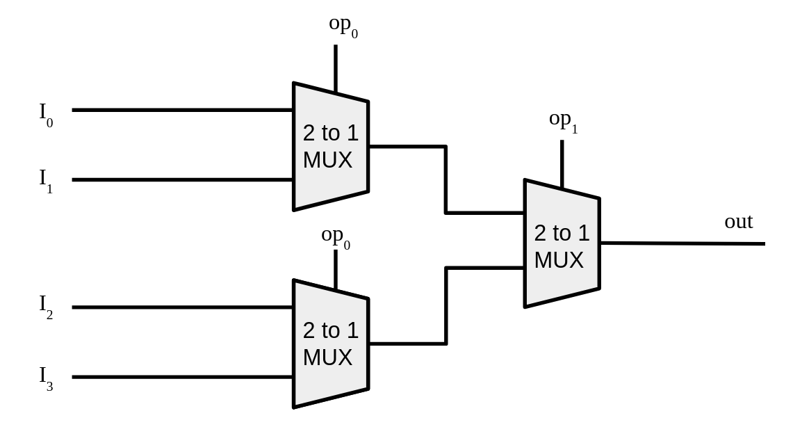

Homework 4: 8-bit ALU in C
Due Date: 10/31/26
Description
In this homework, you will build a functioning 8-bit Arithmetic Logic Unit (ALU) in C in order to understand the core functionality of a large chuck of a modern CPU board. However, you are not allowed to use C's arithmetic or logical operators anywhere except inside a single primitive function. Every NOT, AND, OR, adder, and selector circuit must be constructed by composing that one primitive upward, exactly as real hardware is built from transistors.
This mirrors the actual abstraction hierarchy of a computer. A transistor is a switch. Wire enough switches together and you get a gate. Wire enough gates together and you get an adder. Wire enough adders together and you get an ALU. By the end of this assignment you will have done exactly that in code.
The One Rule That Makes This Hard
The only place in your entire project where you may use C's built-in logical or bitwise operators (!, &&, ||, &, |, ^, ~) is inside a single primitive function called nand. Every other function must be built by calling nand and functions built from nand.
// The only "hardware" you are given. Everything else is built from this.
bit_t gate_nand(bit_t a, bit_t b)
{
return !((a & 1) && (b & 1));
}
Note on 8-bit loops: When moving between 8-bit variables (uint8_t) and single-bit wires (bit_t), you are permitted to use bit shifts (>>, <<) and the bitwise OR assignment operator (|=) solely to extract and pack bits along the bus loops.
This is not arbitrary. NAND is functionally complete: any logic circuit that has ever existed or ever will exist can be built from NAND gates alone.
Project Structure
CS220-HW1-LastName/
├── gates.c # Part 1: all seven logic gates single bit and bitwise
├── circuits.c # Part 2-3: all circuits make from the logic gates; adders, muxes, and alu
├── main.c # Part 4: test harness and your written reflections
└── alu.h # Header you will write to declare all functions
All files must compile together with no warnings under:
Download the starting point here.
Read alu.h thoroughly, it uses typedef to define a new bit_t type name to hint that gates expect single bit inputs. Note that this does not make them bits, the main type that will be used in this HW is uint_8 for an unsigned 8-bit integer.
Part 1: The Gate Layer (25 points)
File: gates.c
Implement all seven fundamental logic gates using only calls to nand(). You may call gates you have already implemented to build later ones, for example, not() may be used inside and().
Function signatures:
typedef uint8_t bit_t;
bit_t not(bit_t a);
bit_t and(bit_t a, bit_t b);
bit_t or(bit_t a, bit_t b);
bit_t xor(bit_t a, bit_t b);
bit_t nor(bit_t a, bit_t b);
bit_t xnor(bit_t a, bit_t b);
Requirements:
- Every function body must contain only calls to
nand()and/or previously defined gate functions. No C operators. - Derive each construction yourself from the truth tables.
Hint for getting started: Think about what NAND already gives you. If you apply NAND to a signal and itself, nand(a, a),what does that truth table look like? Start there and work outward.
After verifying the basic single bit versions of the gates , create 8-bit bit wise versions of each following the pattern below:
uint8_t bitwise_not(uint8_t a) {
uint8_t result = 0;
// Imagine the loop like a bundle of wires carrying the signals into the gates
for (int i = 0; i < 8; i++) {
// Extract current bits from input
bit_t a_i = and((a >> i), 1);
// Apply gate to bit
a_i = not(a_i);
// Recombine on the output
result |= and(a_i, 1) << i;
}
return result;
}
The above example is for the bit wise NOT, use it as the example for the other bit wise gates. At this stage you must use the |= operator in order to combine the bits to simulate the wiring of a computer.
These bit wise versions of the gates are the ones you will use for part of the the arithmetic circuits and for the ALU gate operations.
Part 2: The Arithmetic Layer (30 points)
File: circuits.c
Build adder circuits using only the gate functions from Part 1. The goal is a function that can add two 8-bit numbers, bit by bit, by chaining four full adders, exactly as described in the lesson.
Task 2a: Half Adder (8 points)
A half adder adds two single bits and produces a sum bit and a carry bit.
This requires exactly two gate calls. Work out which gates produce the sum and carry by examining the truth table for 1-bit addition before writing any code.
Task 2b: Full Adder (10 points)
A full adder adds two bits plus a carry-in from a previous stage, producing a sum bit and a carry-out.
Task 2c: Ripple Carry Adder (12 points)
Chain eight full adders to add two 8-bit numbers. Each full adder's carry-out feeds into the next full adder's carry-in; the carry "ripples" from bit 0 (LSB) to bit 3 (MSB).
Requirements:
- Extract individual bits from
aandbusing only right shifts and yourand()gate function. Do not use C's&operator directly. - Feed each extracted bit pair into a full adder along with the carry from the previous stage.
- Reassemble the eight sum bits into the output byte using only left shifts and your
or()gate function. - Set
*overflowto 1 if the carry-out of the MSB full adder is 1, and 0 otherwise. - Carry-in for the bit-0 full adder is always 0.
Part 3: The ALU (30 points)
File: circuits.c
A real ALU does not just add, it can perform multiple operations and selects which result to output based on a control signal. Starting from a 2-1 1-bit MUX, you will build up to a 2-1 8-bit MUX, and then finally a 4-1 8-bit MUX.
Task 3a: 2-1 1-bit MUX (8 points)
A multiplexer selects one of two inputs based on a selector bit. If sel = 0, output is a. If sel = 1, output is b.
Build this using only your gate functions. No C operators or if statements, the selection must happen through pure gate logic. Work out the boolean expression for a MUX from its truth table, then implement it.
| sel | a | b | output |
|---|---|---|---|
| 0 | 0 | 0 | 0 |
| 0 | 0 | 1 | 0 |
| 0 | 1 | 0 | 1 |
| 0 | 1 | 1 | 1 |
| 1 | 0 | 0 | 0 |
| 1 | 0 | 1 | 1 |
| 1 | 1 | 0 | 0 |
| 1 | 1 | 1 | 1 |
Verify by printing the full truth table before moving on.
Task 3b: 2-1 8-bit MUX (8 points)
Next, you must apply the 2-1 1-bit MUX to two 8-bit numbers in order to apply it bitwise. This will effectively pick between two numbers now rather than two individual bits.
uint8_t mux_2_1_8bit(bit_t sel, uint8_t a, uint8_t b);
This will be very similar to the bitwise versions of the gates before, this time using mux_2_1_1_bit. Note this is still selecting one of two options using sel: 0 for a and 1 for b.
Task 3c: 4-1 8-bit MUX (9 points)
To make a ALU with four possible operations, we must have a means of selecting from those four. With the previous MUX's we can select from two 8-bit inputs. Using mux_2_1_8bit funnction calls, make the following function:
This function will take in 4 8-bit numbers as input and output one of them based on the selection bits. Don't overcomplicate it, take a look at the diagram below:

Imagine that the \(I\) values are the full 8-bit numbers coming into the MUX. Half of the incoming numbers are sent to one 2-1 8-bit MUX that is controlled by \(\text{op}_0\), and the other half is sent to a separate 2-1 MUX also controled by \(\text{op}_0\). The results from the two separate 2-1 MUX's are then fed into a final 2-1 MUX that is controlled by \(\text{op}_1\). This is the process you must emulate using your previous function.
Task 3d: 8-bit ALU (10 points)
Combine your ripple carry adder, bitwise gate circuits, and MUX into a complete 8-bit ALU. The ALU supports four operations selected by a 2-bit opcode (op0, op1):
| op1 | op0 | Operation |
|---|---|---|
| 0 | 0 | ADD |
| 0 | 1 | AND |
| 1 | 0 | OR |
| 1 | 1 | XOR |
Requirements:
- Compute all four operation results unconditionally, then use MUX circuits to select the correct one based on
op1andop0. The selection logic must use yourmux()function; noif,switch, or binary operators in the selection step.- For the bit wise operations (AND, OR, XOR), use the bit wise versions of the gates from part 1
- The opcode selection must itself be implemented in terms of your gate and MUX functions. Think about how two selector bits can be combined to choose among four options.
Part 3: Test Harness (10 Points)
File: main.c
Implement unit tests verifying that: - Every gate truth table matches specification. - Compare against C's standard operators to verify
-
The ripple carry adder correctly computes standard sums and detects overflows.
-
Make at least 3 test values
-
The top-level ALU accurately performs and selects all 4 operations using opcode bits.
-
Grading Rubric
| Section | Points |
|---|---|
| Part 1: All seven gates | 25 |
| Part 2a: Half adder | 8 |
| Part 2b: Full adder | 10 |
| Part 2c: Ripple carry adder | 12 |
| Part 3a: 2-1 1-bit MUX | 8 |
| Part 3b: 2-1 8-bit MUX | 8 |
| Part 3c 4-1 8-bit MUX | 9 |
| Part 3b: ALU, all four operations | 10 |
| Part 4: Tests | 10 |
| Total | 100 |
Submission Guidelines
Submit a single .zip file named lastname_firstname_hw_alu.zip containing:
Do not include compiled binaries or object files. The grader will compile from source. Make sure your code compiles cleanly with the command listed at the top of this document before submitting.